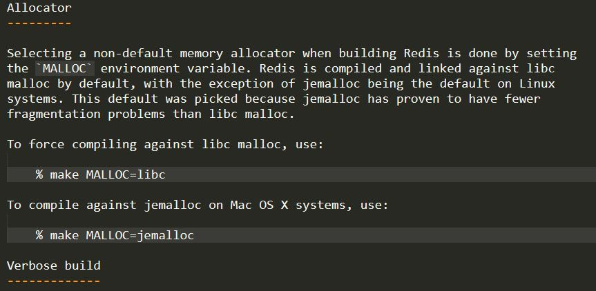

说明
本文主要介绍redis的集群redis-cluster安装以及哨兵模式Redis-Sentinel的安装方法
Redis安装
首先官网下载安装包，下载地址https://redis.io/download
首先解压
1 | tar -xzvf redis-5.0.5.tar.gz -C /yourpath |
编译
1 | make |
可能会报如下错
1 | cd src && make all |
在解压文件的README.md有如下说明

再次编译
1 | make MALLOC=libc |
在redis解压目录下有redis.conf和sentinel.conf分别对应redis单机配置文件和哨兵配置文件的默认配置
Redis-Sentinel安装
Redis Sentinel是Redis的官方高可用性解决方案。官网文档，本例只配置了基础功能，更多配置请参考官网。
sentinel配置
在sentinel.conf配置文件中主要配置以下功能
1 | sentinel monitor mymaster 127.0.0.1 6379 2 |
这一行代表sentinel监控的master的名字叫做mymaster,地址为127.0.0.1:6379，行尾最后的一个2代表什么意思呢？我们知道，网络是不可靠的，有时候一个sentinel会因为网络堵塞而误以为一个master redis已经死掉了，当sentinel集群式，解决这个问题的方法就变得很简单，只需要多个sentinel互相沟通来确认某个master是否真的死了，这个2代表，当集群中有2个sentinel认为master死了时，才能真正认为该master已经不可用了。（sentinel集群中各个sentinel也有互相通信，通过gossip协议）。
1 | sentinel auth-pass mymaster MySUPER--secret-0123passw0rd |
这一行代表sentinel连接主redis的密码，这样就是个简单的sentinel配置了。
redis主从配置
redis主从配置均来源于redis.conf，主要修改的有以下内容
主机配置有
1 | port 7000 |
从机的配置和主机的配置类似，主要是在主机的配置上增加以下几项
1 | #从哪个主机进行复制 |
这样一个简单的哨兵模式配置就好了，
哨兵模式应至少具备一主三从配置，主从启动命令为redis-server $base_path/7000/redis.conf,哨兵启动命令为redis-sentinel $base_path/sentinel/sentinel.conf,查询哨兵状态redis-cli -p 26379 info sentinel